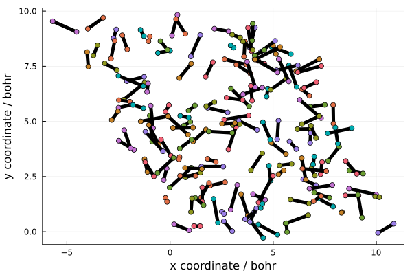

Semiclassical EBK quantisation
In surface science, it is often of interest to investigate how collisions with surfaces can perturb the quantum states of molecules. In particular, for diatomic molecules, the rotational and vibrational quantum numbers can undergo significant changes when the molecule impacts the surface.
Einstein-Brillouinn-Keller (EBK) quantisation allows for a semiclassical investigation into these phenomena by providing a link between the quantum numbers and classical positions and velocities. The quantisation procedure allows the user to generate a classical distribution with a given set of quantum numbers, then perform semiclassical dynamics and extract the quantum numbers at the end by reversing the procedure.
These three steps can be applied to give insight into the processes taking place during surface scattering and allow us to attempt to predict the experimentally observed change in the quantum numbers.
A detailed yet approachable description of the theory is given by [4] so we shall not delve into the theory here. Briefly, the procedure for a diatomic molecule involves an optimisation process to find the bounds of an integral, then computing the integral to obtain the vibrational quantum number. The rotational quantum number comes directly from the classical angular momentum of the molecule.
Configurations can be generated by randomly selecting bond lengths from the appropriate probability distribution and selecting a matching radial velocity.
Example
In this example we will create a quantised distribution suitable for use as initial conditions for hydrogen scattering simulations.
The simulation can be set up in the usual way, by specifying the atoms along with the model and the simulation cell.
using NQCDynamics
using Unitful, UnitfulAtomic
atoms = Atoms([:H, :H])
model = DiatomicHarmonic()
cell = PeriodicCell(austrip.([5.883 -2.942 0; 0 5.095 0; 0 0 20] .* u"Å"))
sim = Simulation(atoms, model; cell=cell)Simulation{Classical}:
Atoms{Float64}([:H, :H], [1, 1], [1837.4715941070515, 1837.4715941070515])
DiatomicHarmonic
r₀: Float64 1.0
The distribution is generated using the QuantisedDiatomic.generate_configurations function. We have to provide the desired vibrational ν and rotational J quantum numbers, along with the number of samples and some other options as keyword arguments. In addition to the rotational and vibrational energy we have applied a translational impulse of 1 eV and positioned the molecule at a height of 10 bohr.
using NQCDynamics.InitialConditions: QuantisedDiatomic
ν, J = 2, 0
nsamples = 150
configurations = QuantisedDiatomic.generate_configurations(sim, ν, J;
samples=nsamples, translational_energy=1u"eV", height=10)150-element Vector{Tuple{Matrix{Float64}, Matrix{Float64}}}:
([-0.002642718765983735 0.002642718765983735; -0.0017629303184427583 0.0017629303184427583; -0.007782170586404881 -0.0011620879730941014], [-3.238654424670376 -3.9851750503628653; 9.699881240437458 9.201885062669275; 10.46751363389826 9.53248636610174])
([-0.0011407230264501528 0.0011407230264501528; -0.003964185506870432 0.003964185506870432; -0.006480173970381899 -0.0024640845891170833], [3.260497911528866 2.938264127742037; 2.117722627334801 0.9979113621174012; 10.283618294569338 9.716381705430662])
([-0.006314196522056103 0.006314196522056103; 0.002228201025573239 -0.002228201025573239; -0.004326795926639803 -0.004617462632859179], [4.924717763042996 5.857321311967385; 8.38199967202469 8.052895537095122; 10.010732830409516 9.989267169590484])
([-0.0010130186023723656 0.0010130186023723656; 0.0027326775505507 -0.0027326775505507; 0.00025015334633180213 -0.009194411905830785], [5.132474869976016 4.9914675663097166; 8.05547508491497 8.435850620260709; 9.671340516998141 10.328659483001859])
([0.0007591344167839367 -0.0007591344167839367; 0.0005751971357403064 -0.0005751971357403064; -0.0049053853848912725 -0.0040388731746077095], [-1.2361680143274176 -2.25272321309629; 6.751662858206495 5.9814176608790826; 9.709913859559878 10.290086140440122])
([0.0006183706013574897 -0.0006183706013574897; 0.0001463385645712856 -0.0001463385645712856; -0.0036408348167291005 -0.005303423742769882], [-2.0897360402506666 -1.2616773517263353; 6.824257532391362 7.020219176740909; 9.443407722395706 10.556592277604294])
([0.0005257509538470626 -0.0005257509538470626; 0.004022605217973793 -0.004022605217973793; 0.0004154653209271558 -0.009359723880426139], [7.370245572829592 7.2981664802913855; 3.157437411558033 2.605948666498424; 10.335038273286608 9.664961726713392])
([-0.002266934645734119 0.002266934645734119; -0.0016876787676067789 0.0016876787676067789; 0.0009639021451632217 -0.009908160704662203], [1.2051958844559132 0.895999145998243; 5.717633153479847 5.4874435573703; 9.629278420112525 10.370721579887475])
([-0.005273301971771137 0.005273301971771137; -0.0011121363095770345 0.0011121363095770345; -0.001557831919023588 -0.007386426640475394], [1.9436926270310497 2.662940433156498; 2.088540561490116 2.2402295042166545; 10.198746629182253 9.801253370817747])
([0.0029727979331722865 -0.0029727979331722865; -0.0006113669941815905 0.0006113669941815905; -0.0039059831360741823 -0.0050382754234248], [8.678750234881441 9.988720952456092; 1.9538073659063717 1.6844069969364903; 9.875263154988293 10.124736845011707])
⋮
([0.0010744925408626032 -0.0010744925408626032; -0.001185133211974754 0.001185133211974754; -0.0044394759714189245 -0.0045047825880800575], [2.607165694670424 3.0138526809493533; 0.47196399781753695 0.023400386635882536; 9.993820489648847 10.006179510351153])
([0.0007873678833576016 -0.0007873678833576016; -7.727207999867922e-6 7.727207999867922e-6; -0.005865015956961029 -0.003079242602537953], [1.163394811052731 1.4614073699100092; 0.25687527976719615 0.2539505922386128; 10.26359833290628 9.73640166709372])
([0.0010460555611811798 -0.0010460555611811798; -0.0012055537012385668 0.0012055537012385668; -0.003525145187919715 -0.005419113371579267], [-0.46929789578333114 -0.1256225527283572; 8.640817615972477 8.244740106115813; 9.84443699995261 10.15556300004739])
([0.0010987950955046522 -0.0010987950955046522; 0.0007288346312052187 -0.0007288346312052187; -0.005778199818532761 -0.003166058740966221], [7.322052413904093 6.961049810019194; 1.616924915170718 1.3774706249732063; 9.78544914002298 10.21455085997702])
([0.0021586213963239397 -0.0021586213963239397; -0.004524750352278905 0.004524750352278905; -0.002178379090893871 -0.006765879468605111], [5.273837919884568 5.755742014958014; 7.8240778669966105 6.813944395855476; 9.743964455516048 10.256035544483952])
([0.00038660564639062477 -0.00038660564639062477; 0.0009366092984520649 -0.0009366092984520649; -0.01028217330319689 0.0013379147436979088], [4.396938096906973 4.475120789685396; 1.0750777628869979 1.2644868874508557; 10.587478340209415 9.412521659790585])
([-0.003361902682936617 0.003361902682936617; -0.00017814471498354183 0.00017814471498354183; -0.003413284795186665 -0.005530973764312316], [2.5214562599111323 3.1451867039755834; 4.8894607750045465 4.922511785894415; 10.0982231793775 9.9017768206225])
([-0.0010313767877232329 0.0010313767877232329; 0.0023143032625931943 -0.0023143032625931943; -0.005122947690749911 -0.00382131086874907], [6.831326737716217 7.0781704954281475; 4.803055012545115 4.249163049274769; 9.922118442032184 10.077881557967816])
([0.005499926607945204 -0.005499926607945204; 0.003005868130480945 -0.003005868130480945; -0.005832388481396092 -0.0031118700781028897], [10.840048640259274 10.083208573886422; 0.3620118611491499 -0.051623010286193094; 9.906407963428887 10.093592036571113])The output contains both the positions and velocities, these can be passed directly to the DynamicalDistribution for use with dynamics. Here however, let's focus on the positions and visualise the distribution.
This collects the x and y coordinate for each atom:
r = last.(configurations)
x = hcat([i[1,:] for i in r]...)
y = hcat([i[2,:] for i in r]...)2×150 Matrix{Float64}:
9.69988 2.11772 8.382 8.05548 6.75166 … 4.88946 4.80306 0.362012
9.20189 0.997911 8.0529 8.43585 5.98142 4.92251 4.24916 -0.051623Now we can plot the distribution:
using Plots
plt = plot(
xlabel="x coordinate / bohr",
ylabel="y coordinate / bohr",
legend=false,
)
for i=1:nsamples
plot!([x[1,i], x[2,i]], [y[1,i], y[2,i]], linewidth=5, color=:black)
scatter!([x[1,i], x[2,i]], [y[1,i], y[2,i]])
end
plt
Here we can see that the molecule is randomly distributed within the unit cell. Since we have used a harmonic potential, this could have been produced without using the EBK procedure, but this technique can use any arbitrary potential. In the hydrogen scattering example we build on this example and use the sample procedure to perform scattering simulations starting from this distribution.